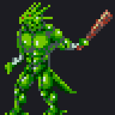
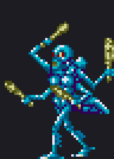
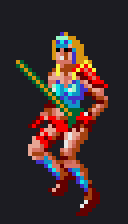
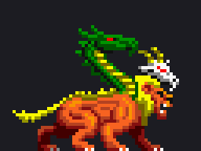
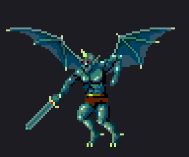
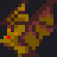
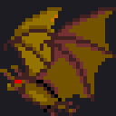
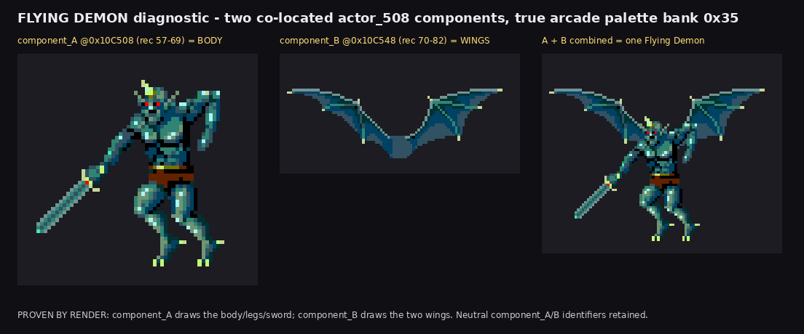

Rendered from pc090oj.bin + real emitted PC090OJ records; palettes via arcade round-1 index table 0x3BA88 -> pool 0x4FD02 (converter FUN_0003ba64, MAME xBGR_555). PC090OJ draw order: lower record on top. No base+n, no screenshots, no Genesis evidence.







